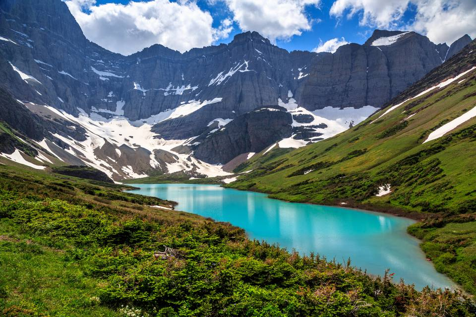

Glacier National Park is located in northwestern Montana, near the US-Canada border. The park spans over 1 million acres or 1562.5 square miles. The park contains over 130 lakes and is home to over 1,000 different species of plants. Glacier National Park was first established in 1910 by the National Park Service.
| Lake Name | Sqare Miles |
|---|---|
| Lake McDonald | 10.66 sq. mi. |
| Saint Mary Lake | 6.13 sq. mi. |